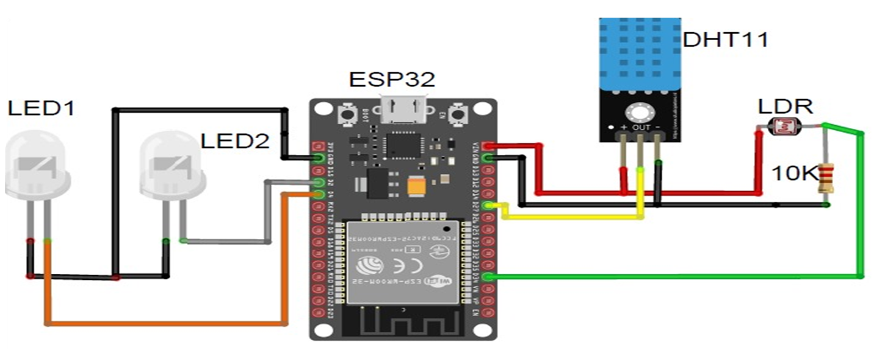

1. Hardware Configuration:
LDR (Light Dependent Resistor): The LDR gauges the ambient light level. Its resistance decreases in the presence of light and increases in darkness. DHT11 Sensor:Used for temperature and humidity measurement, the DHT11 provides digital output for these parameters. LED: The LED functions as an output device, serving purposes such as indicating system status or controlling connected home appliances. Microcontroller (e.g., Arduino or Raspberry Pi): Serving as the system's core, the microcontroller interconnects the sensors and the LED.2. Sensor Data Acquisition:
- The microcontroller reads data from the LDR to assess the ambient light level. This data can be processed for various applications, such as activating lights in low-light conditions or managing window blinds. - The DHT11 sensor supplies data on temperature and humidity. This information facilitates climate control and automation, such as activating a fan in response to temperature changes.3. Internet of Things (IoT) Integration:
- To connect the system to the internet, a Wi-Fi module or Ethernet shield is necessary for the microcontroller. Examples include using an ESP8266 for Arduino or a Raspberry Pi with built-in Wi- Fi. - Utilize an IoT platform or service (e.g., Blynk, ThingSpeak, Adafruit IO) to transmit sensor data to the cloud. Configure the microcontroller to regularly send data intervals. By adhering to these principles, a smart home automation system employing LDR and DHT11 sensors, coupled with an LED for IoT integration, can be developed. This system offers convenience, energy efficiency, and the capability to monitor and control your home remotely